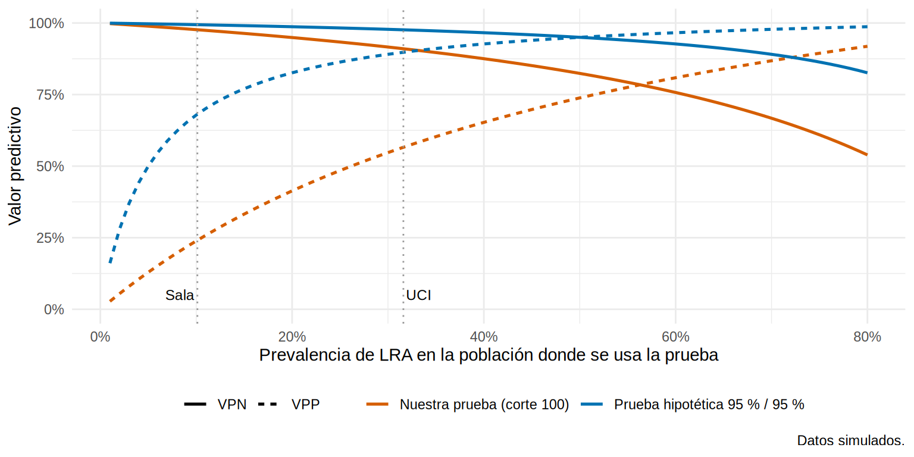
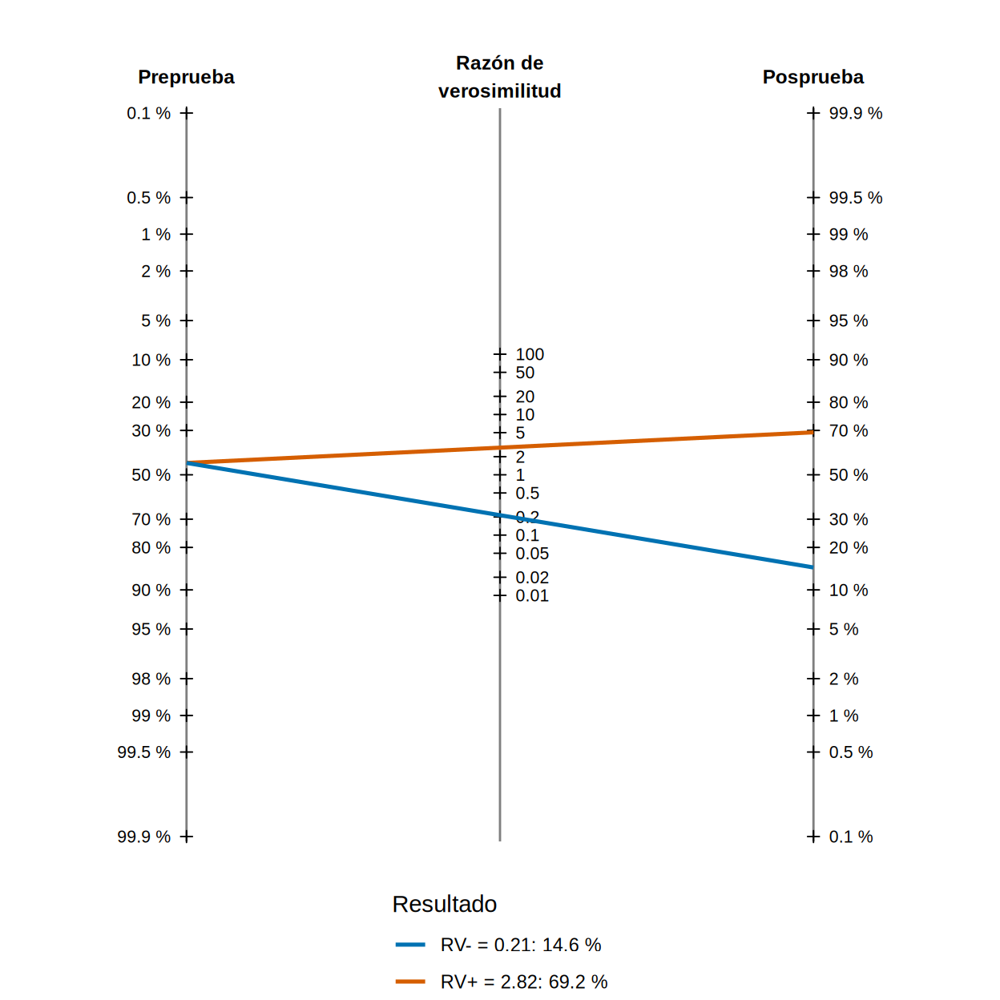

# A tibble: 2 × 3
entorno n porcentaje
<chr> <int> <dbl>
1 Sala 1383 69.2
2 UCI 617 30.9Sensibilidad, especificidad, VPP y VPN: lo que la prevalencia cambia
Nota🩺 Escenario
Una paciente de 72 años ingresa a la UCI con sepsis y una creatinina de 1.4 mg/dL. El laboratorio informa un biomarcador urinario de daño tubular (tipo NGAL) positivo. ¿Qué tan seguro puedes estar de que va a desarrollar una lesión renal aguda (LRA) importante? La respuesta no está en el folleto del kit: depende de a quién se lo hiciste. La misma prueba “positiva” significa cosas distintas en la UCI y en una sala general.
Antes de hablar de curvas, modelos o decisiones, necesitamos el vocabulario básico de toda prueba diagnóstica: qué mide cada número, qué pregunta contesta y de qué depende. Es la parte más sencilla del capítulo y la que más se confunde.
Lo que vamos a hacer
- Armar la tabla 2×2 de una prueba contra su estándar de referencia y calcular sensibilidad, especificidad, VPP y VPN con su IC.
- Ver cómo el VPP y el VPN cambian con la prevalencia (UCI vs. sala), mientras que la sensibilidad y la especificidad se mueven bastante menos.
- Usar las razones de verosimilitud y el teorema de Bayes (con un nomograma de Fagan simple) para actualizar la probabilidad de enfermedad paciente por paciente.
Una aclaración de partida: aquí diagnosticamos (¿tiene el paciente ahora una condición que un estándar de referencia puede confirmar?). Cuando la pregunta es qué le pasará en el futuro (diálisis a 5 años, por ejemplo), hablamos de pronóstico, con tiempo hasta el evento y censura: eso es el Cap. 17.
Paso 0. Los datos
Usamos dx_lra, una base simulada de 2 000 adultos hospitalizados (30 % en UCI). Cada paciente tiene un biomarcador urinario (ngal, en ng/mL, simulado) y el resultado del estándar de referencia: lra = 1 si desarrolló una LRA KDIGO ≥ 2 (creatinina que al menos se duplica, o diuresis muy baja) en las siguientes 72 h. Como es una simulación, la columna lra está completa para todos; en un estudio real la tendrías solo para quienes se verificaron (lo veremos en 16.7).
# A tibble: 2 × 4
entorno n con_lra prevalencia
<chr> <int> <dbl> <dbl>
1 Sala 1383 140 0.101
2 UCI 617 195 0.316Qué vemos: la prevalencia global es de 16.8 %, pero en la UCI es de 31.6 % y en sala de 10.1 %. Recuerda esta diferencia: es la protagonista del subcapítulo.
Paso 1. La tabla 2×2: una prueba contra su estándar
Una prueba diagnóstica convierte un dato en un “sí/no”. Para empezar convertimos el biomarcador en positivo/negativo con un punto de corte provisional de 100 ng/mL (en 16.3 veremos cómo elegirlo bien). El estándar de referencia (gold standard) es la “verdad” contra la que se juzga la prueba: aquí, la creatinina seriada.
dx <- dx |>
mutate(prueba = factor(if_else(ngal >= 100, "NGAL >= 100 (positivo)", "NGAL < 100 (negativo)"),
levels = c("NGAL >= 100 (positivo)", "NGAL < 100 (negativo)")),
referencia = factor(if_else(lra == 1, "LRA", "Sin LRA"), levels = c("LRA", "Sin LRA")))
tab <- table(Prueba = dx$prueba, Referencia = dx$referencia)
addmargins(tab) Referencia
Prueba LRA Sin LRA Sum
NGAL >= 100 (positivo) 285 502 787
NGAL < 100 (negativo) 50 1163 1213
Sum 335 1665 2000t2 <- tabla_2x2(dx$ngal >= 100, dx$lra) # a = VP, b = FP, c = FN, d = VN
t2$a
[1] 285
$b
[1] 502
$c
[1] 50
$d
[1] 1163Las cuatro celdas tienen nombre:
| LRA (referencia +) | Sin LRA (referencia −) | |
|---|---|---|
| Prueba + | a = verdaderos positivos (VP) | b = falsos positivos (FP) |
| Prueba − | c = falsos negativos (FN) | d = verdaderos negativos (VN) |
Qué vemos: de 335 pacientes con LRA, la prueba detectó a 285 (VP) y se le escaparon 50 (FN). De 1665 pacientes sin LRA, 1163 salieron negativos (VN) y 502 salieron positivos por error (FP).
Paso 2. Sensibilidad y especificidad: las propiedades de la prueba
Se leen por columnas (dentro de los que tienen, o no tienen, la enfermedad):
- Sensibilidad = a / (a + c): de los que sí tienen LRA, ¿qué proporción da positivo? Es la capacidad de no dejar escapar enfermos.
- Especificidad = d / (b + d): de los que no tienen LRA, ¿qué proporción da negativo? Es la capacidad de no alarmar a sanos.
Reglas mnemotécnicas clásicas: una prueba muy sensible y negativa descarta (SnNout); una muy específica y positiva confirma (SpPin).
# A tibble: 7 × 4
medida estimado ic_inf ic_sup
<chr> <dbl> <dbl> <dbl>
1 Sensibilidad 0.851 0.809 0.885
2 Especificidad 0.698 0.676 0.72
3 VPP 0.362 0.329 0.396
4 VPN 0.959 0.946 0.969
5 RV+ (LR+) 2.82 2.59 3.07
6 RV- (LR-) 0.214 0.165 0.276
7 Prevalencia en la muestra 0.168 NA NA Qué vemos: con ese corte, la sensibilidad es de 85.1 % (IC 95 % 80.9 % a 88.5 %) y la especificidad de 69.8 % (IC 67.6 % a 72.0 %). Detecta a la mayoría de los pacientes con LRA, a costa de muchos falsos positivos. Los IC son de Wilson: se calculan como cualquier proporción, así que dependen del número de enfermos (para la sensibilidad) y de sanos (para la especificidad), no del total.
Paso 3. VPP y VPN: lo que quiere saber el clínico
Cuando el resultado ya está en tu mano, la pregunta es la inversa: “dado que salió positivo, ¿cuál es la probabilidad de que tenga LRA?”. Eso se lee por filas:
- Valor predictivo positivo (VPP) = a / (a + b): de los que dieron positivo, ¿qué proporción tiene LRA?
- Valor predictivo negativo (VPN) = d / (c + d): de los que dieron negativo, ¿qué proporción está libre de LRA?
Qué vemos (misma tabla): VPP 36.2 % y VPN 95.9 %. Es decir, aunque la sensibilidad y la especificidad “se ven bien”, solo ~1 de cada 3 positivos tiene realmente una LRA ≥ 2, mientras que un negativo es muy tranquilizador.
¿Por qué? Porque en el VPP pesan los falsos positivos, y estos salen de los sanos, que son muchos. Veamos qué pasa cuando cambia la proporción de enfermos.
La prevalencia manda
Calculemos todo por separado en la UCI y en la sala, con el mismo corte:
res_ent <- dx |>
group_by(entorno) |>
group_modify(\(d, k) {
t <- tabla_2x2(d$ngal >= 100, d$lra)
m <- medidas_dx(t$a, t$b, t$c, t$d)$estimado
tibble(prevalencia = m[7], sensibilidad = m[1], especificidad = m[2], vpp = m[3], vpn = m[4])
})
res_ent |> mutate(across(where(is.numeric), \(x) round(x, 3)))# A tibble: 2 × 6
# Groups: entorno [2]
entorno prevalencia sensibilidad especificidad vpp vpn
<chr> <dbl> <dbl> <dbl> <dbl> <dbl>
1 Sala 0.101 0.807 0.726 0.249 0.971
2 UCI 0.316 0.882 0.616 0.515 0.919Qué vemos: el VPP pasa de 24.9 % en sala a 51.5 % en UCI, y el VPN de 97.1 % a 91.9 %. La sensibilidad y la especificidad se mueven menos que el VPP (sensibilidad 80.7 % en sala y 88.2 % en UCI; especificidad 72.6 % y 61.6 %), pero no están quietas: la UCI tiene casos más graves (más fáciles de detectar) y más sepsis (que eleva el biomarcador sin daño renal y empeora la especificidad). Esa mezcla de pacientes, el espectro, también mueve las propiedades de la prueba. Lo retomamos en 16.7.
La relación exacta es el teorema de Bayes:
\[ \text{VPP} = \frac{\text{Sens} \times \text{Prev}}{\text{Sens} \times \text{Prev} + (1-\text{Esp}) \times (1-\text{Prev})} \qquad \text{VPN} = \frac{\text{Esp} \times (1-\text{Prev})}{\text{Esp} \times (1-\text{Prev}) + (1-\text{Sens}) \times \text{Prev}} \]
La función vpp_vpn() (en R/funciones_extra_cap16.R) la implementa. La usamos para dibujar el VPP y el VPN de la misma prueba (sens. 85 %, esp. 70 %) y de una prueba hipotética casi perfecta (95 % y 95 %) según la prevalencia:
prevs <- seq(0.01, 0.80, by = 0.01)
curvas <- bind_rows(
vpp_vpn(medidas$estimado[1], medidas$estimado[2], prevs) |> mutate(prueba = "Nuestra prueba (corte 100)"),
vpp_vpn(0.95, 0.95, prevs) |> mutate(prueba = "Prueba hipotética 95 % / 95 %")
) |> pivot_longer(c(vpp, vpn), names_to = "medida", values_to = "valor")
ggplot(curvas, aes(prev, valor, colour = prueba, linetype = toupper(medida))) +
geom_line(linewidth = 0.9) +
geom_vline(xintercept = c(res_ent$prevalencia[res_ent$entorno == "Sala"], res_ent$prevalencia[res_ent$entorno == "UCI"]),
colour = "grey60", linetype = 3) +
annotate("text", x = res_ent$prevalencia[res_ent$entorno == "Sala"], y = 0.05, label = "Sala", hjust = 1.1, size = 3.2) +
annotate("text", x = res_ent$prevalencia[res_ent$entorno == "UCI"], y = 0.05, label = "UCI", hjust = -0.1, size = 3.2) +
scale_x_continuous(labels = scales::percent) + scale_y_continuous(labels = scales::percent, limits = c(0, 1)) +
scale_colour_manual(values = c("#D55E00", "#0072B2")) +
labs(x = "Prevalencia de LRA en la población donde se usa la prueba", y = "Valor predictivo",
colour = NULL, linetype = NULL, caption = "Datos simulados.") +
theme_minimal(base_size = 11) + theme(legend.position = "bottom")
Qué vemos: a prevalencias bajas el VPP se desploma, incluso con una prueba casi perfecta; el VPN, en cambio, es alto. A prevalencias altas ocurre lo contrario. Las líneas punteadas marcan nuestra sala y nuestra UCI. Un VPP solo se puede reutilizar en una población con prevalencia parecida a la del estudio. Sensibilidad y especificidad viajan mejor entre poblaciones, aunque no son inmunes a cambios de espectro (16.7).
Advertencia⚠️ Trampa clásica: el VPP de un estudio de casos y controles
Si el investigador elige cuántos enfermos y cuántos sanos incluir (por ejemplo, 100 con LRA y 100 sin LRA), la “prevalencia” de su muestra la fija él (50 %), no la realidad. El VPP y el VPN calculados en esa muestra no sirven. Sensibilidad y especificidad sí se pueden estimar, porque se calculan dentro de cada grupo. En ese caso, lleva esas dos cifras a tu prevalencia con Bayes.
Paso 4. Razones de verosimilitud: una forma de aplicar Bayes en la cabecera del paciente
Las razones de verosimilitud (RV, o likelihood ratios, LR) resumen cuánto cambia un resultado la probabilidad de enfermedad, sin depender de la prevalencia:
- RV+ = sensibilidad / (1 − especificidad): cuántas veces es más probable un positivo en un enfermo que en un sano.
- RV− = (1 − sensibilidad) / especificidad: lo mismo para un negativo (queremos que sea pequeña, cercana a 0).
La actualización se hace en odds (probabilidad / (1 − probabilidad)):
\[ \text{odds posprueba} = \text{odds preprueba} \times \text{RV} \]
Una regla práctica: una RV+ > 10 o una RV− < 0.1 cambian la probabilidad de forma grande y a veces concluyente; entre 2 y 5 (o 0.2 y 0.5), de forma modesta.
RV_pos RV_neg
2.82 0.21 ## Escenario: paciente de UCI con sepsis. Su probabilidad preprueba es la prevalencia en esos pacientes
pre <- mean(dx$lra[dx$entorno == "UCI" & dx$sepsis == 1])
post_pos <- prob_post(pre, rv_pos); post_neg <- prob_post(pre, rv_neg)
c(preprueba = pre, tras_positivo = post_pos, tras_negativo = post_neg) |> round(3) preprueba tras_positivo tras_negativo
0.444 0.692 0.146 Qué vemos: la RV+ es 2.8 y la RV− es 0.21. Para una paciente de UCI con sepsis, la probabilidad antes de la prueba es de 44.4 %. Un resultado positivo la lleva a 69.2 % y uno negativo la baja a 14.6 %. El positivo ayuda, pero no es una sentencia; el negativo, en cambio, casi descarta el problema.
Un nomograma de Fagan hace esta cuenta con una regla: se une con una línea la probabilidad preprueba (izquierda) con la RV (centro) y se lee la posprueba (derecha). Nuestra versión simple dibuja las dos rectas, la del positivo y la del negativo:
grafico_fagan(pre, c("RV+" = rv_pos, "RV-" = rv_neg))
Qué vemos: las dos rectas parten del mismo punto (la preprueba). La que pasa por la RV+ sube moderadamente; la que pasa por la RV− baja mucho. La inclinación de cada recta es la fuerza de esa RV.
Tip💡 Otra mirada: dos pruebas, en serie o en paralelo
Si una prueba sola no basta, se pueden combinar dos (idea tomada del taller de pruebas diagnósticas del curso del autor). En serie (se confirma: positivo solo si ambas son positivas) sube la especificidad y baja la sensibilidad. En paralelo (positivo si cualquiera es positiva) sube la sensibilidad y baja la especificidad. Con nuestros datos, usando como segunda prueba una creatinina de ingreso ≥ 1.3 mg/dL:
a_pos <- dx$ngal >= 100; b_pos <- dx$creat_ingreso >= 1.3
comb <- list(`Solo NGAL >= 100` = a_pos, `Solo creatinina >= 1.3` = b_pos,
`En serie (ambas +)` = a_pos & b_pos, `En paralelo (alguna +)` = a_pos | b_pos)
map_dfr(comb, \(p) { t <- tabla_2x2(p, dx$lra); tibble(sensibilidad = t$a / (t$a + t$c), especificidad = t$d / (t$b + t$d)) },
.id = "estrategia") |>
mutate(across(where(is.numeric), \(x) round(x, 3)))# A tibble: 4 × 3
estrategia sensibilidad especificidad
<chr> <dbl> <dbl>
1 Solo NGAL >= 100 0.851 0.698
2 Solo creatinina >= 1.3 0.364 0.801
3 En serie (ambas +) 0.301 0.929
4 En paralelo (alguna +) 0.913 0.571Se comporta como se espera. Ojo: el cálculo “de manual” multiplica sensibilidades y especificidades suponiendo que las pruebas son independientes entre sí dentro de enfermos y sanos; aquí no lo son del todo (ambas suben con la sepsis y con el daño renal), así que conviene medirlo en los datos, como hicimos.
Paso 5. Qué reportar
Cuando publiques o leas un estudio de una prueba, exige (y reporta) siempre:
- La tabla 2×2 con los números absolutos (permite recalcular todo).
- Sensibilidad y especificidad con IC, y el punto de corte con el que se calcularon.
- La prevalencia de la población estudiada, y VPP/VPN solo si esa población representa a aquella donde se usará la prueba.
- Las RV si quieres que otros clínicos apliquen la prueba en pacientes con otra preprueba.
Importante🎯 En resumen
- La tabla 2×2 cruza el resultado de la prueba con el estándar de referencia; de ella salen todas las medidas.
- Sensibilidad y especificidad (por columnas) describen a la prueba; VPP y VPN (por filas) describen lo que significa un resultado en una población concreta.
- El VPP depende de la prevalencia: con la misma prueba, en la UCI es mucho mayor que en sala. Un VPP no se exporta sin mirar la prevalencia.
- Las razones de verosimilitud y Bayes (en odds) permiten actualizar la probabilidad de cada paciente a partir de su preprueba.
- Dicotomizar un biomarcador continuo en un solo corte pierde información: en 16.2 veremos todos los cortes a la vez.
Ejercicio
- Repite el cálculo de sensibilidad, especificidad, VPP y VPN con un corte de 150 ng/mL. ¿Quién sube y quién baja? Calcula también RV+ y RV−.
-
Adaptado del taller de pruebas diagnósticas del curso del autor (Semana 10). Una tira reactiva hipotética de tamizaje de ERC tiene sensibilidad del 90 % y especificidad del 95 %. Calcula el VPP con
vpp_vpn()en tres poblaciones: pacientes con diabetes (prevalencia de ERC del 30 %), adultos de 60 años o más de la población general (15 %) y adultos jóvenes sanos (1 %). ¿A quién tiene sentido tamizar? - Con la paciente del escenario, ¿cómo cambia la probabilidad posprueba si en lugar de UCI con sepsis estuviera en sala sin sepsis? Usa el nomograma con la preprueba correspondiente.